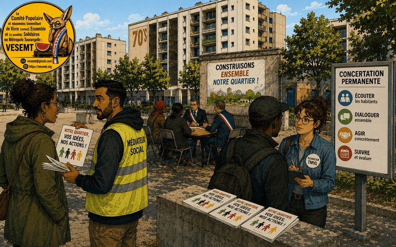

AVANT DE PARLER DU « BIDULE », RAPPELONS QUI EST AUX MANETTES
Si nous nous adressons directement à Tours Métropole Val de Loire (TMVL), c’est parce que la Politique de la Ville est une compétence intercommunale depuis Tour(s)plus (2000) puis TMVL (2017). La loi de 2014 a renforcé son rôle : diagnostic, orientations, animation et coordination du Contrat de Ville. TMVL en est le pilote institutionnel.
C’est donc à elle que nous posons une question simple : QUAND LES HABITANT·ES PARLENT, QUI S’ENGAGE À ÉCOUTER… ET SURTOUT À AGIR ?
Un questionnaire recueille une parole ; une politique publique doit produire des effets.
TMVL lance une grande enquête auprès des habitant·es des quartiers du Contrat de Ville. Le fameux « bidule » est accessible ici : https://www.tours-metropole.fr/actualites/habitants-des-quartiers-du-contrat-de-ville-participez-notre-enquete
Il faut reconnaître à TMVL une vraie qualité : ELLE BAT LA COMMUNICATION, au point de parfois battre la réalité. Mais la question demeure : QUI PARTICIPE (combien d’habitant.es et pourquoi pas tous les QPV) ET À QUOI ?
DEMANDEZ AUX PERSONNES ! C’EST FORMIDABLE ! comme le Président Macron nous l’a montré avec un certain cynisme avec la conférence citoyenne sur le climat
Les habitant·es des quartiers populaires possèdent une compétence rare : L’EXPÉRIENCE DE LA VIE RÉELLE. Elles connaissent leurs immeubles, leurs ascenseurs, les transports, les commerces et services qui disparaissent. TMVL semble enfin décidé à s’y intéresser… une fois par an. Or, un habitant qui vit le problème quotidiennement possède une expertise qu’un cabinet d’études découvre après six mois et trois réunions PowerPoint, dont celle où des EluEs on dit Chiche au « Bidule »
LE CONTRAT DE VILLE ET L’ANRU : DE MAGNIFIQUES PRINCIPES
Le Contrat de Ville 2024-2030 et le NPNRU (ANRU) prévoient de reconnaître l’expertise d’usage des habitant·es, de s’appuyer sur les Conseils citoyens, les collectifs et tables de quartier, et d’évoluer vers la co-construction. C’est magnifique. Mais si la concertation consiste à expliquer ce qui a déjà été décidé, ce n’est qu’une présentation PowerPoint avec public.
MAIS ALORS… QUEL EST LE PROBLÈME ?
Un entretien n’est pas une décision. Qui publie les résultats ? Qui répond ? Qui donne un calendrier ? Que se passe-t-il si les gens ne sont pas d’accord ? « Consulter » n’est pas « associer », « donner son avis » n’est pas « avoir du pouvoir ». Sinon, c’est de la COLLECTE PARTICIPATIVE : les personnes parlent, la collectivité collecte, les technicien·nes analysent, les élu·es arbitrent, et les personnes attendent. Slogan : « PARTICIPEZ, ON S’OCCUPE DU RESTE. »
L’EXEMPLE DE LA GALBOISIÈRE OÙ J’HABITE
Depuis janvier 2024, La Galboisière est officiellement un Quartier Prioritaire de la Politique de la Ville (QPV). Mais pour un habitant de la Tour de la Galboisière, la question reste embarrassante : qu’est-ce qui a concrètement changé ? Quelle information ? Quelle action ? Quel budget ? Aucun. On découvre qu’on peut être prioritaire sur une carte et ordinaire dans les budgets. C’est le label QPV : « Félicitations ! Vous allez être interrogé·es… puis nous verrons. » … Ah non pas La Galboisière car vous ne serez pas consultés …. comme pour la transformation de votre gare »
LA DÉMOCRATIE EXISTE… DANS LES PDF
Dans les documents administratifs de TMVL, la démocratie participative existe : elle est dans les délibérations, les contrats et les PDF. Elle ne dérange personne. Mais sur le terrain, pas d’information de proximité, pas d’action identifiée, et TMVL est absente des réunions de réhabilitation du bailleur, comme la dernière à « la Galboisière » . Les habitant·es développent leur « résilience », joli mot pour dire : « vous apprendrez à nous regarder faire sans vous, mais pour vous, » et comme nous le rappelait Nelson Mandela en pratiquant ainsi « ce sera finalement « contre vous ! ».
Au lieu de demander seulement : « Êtes-vous satisfait·e ? », il faut questionner les budgets, les équipements, les logements réhabilités et les écarts avec les autres quartiers. Le problème d’un quartier populaire n’est pas qu’il manque d’opinions : il manque de moyens.
PROPOSITIONS DE PETITES AMÉLIORATIONS
- UNE INFORMATION DE PROXIMITÉ : Au pied des immeubles, avec des médiateurs sociaux et des données claires (budgets, projets, responsables, calendriers).
- UNE VÉRITABLE PARTICIPATION : Du diagnostic à l’évaluation, pas seulement une « visite annuelle ».
- UN DROIT DE RÉPONSE ET UN TABLEAU ANNUEL PUBLIC : Une réponse explicite pour chaque proposition (Oui/Non/Pourquoi).
- POUR LES PROJETS ANRU, LA CO-CONSTRUCTION : Un projet modifiable avec les habitant·es, pas une simple information.
CONCLUSION : À LA VÔTRE !
Merci TMVL pour cette enquête. Mais la question n’est pas seulement d’être écouté·es : les habitantEs doivent constater des effets matériels dans les quartiers.
« Les habitant·es n’ont pas besoin d’un strapontin dans la démocratie, mais d’une place à la table des décisions. Pour redonner confiance dans la parole publique, donnez-vous en les moyens. CHICHE ! »
Les habitant.es n’ont pas besoin de consultation quelque soit son nom sans garantie car notre Président Emmanuel Macron avec un Cynisme plein d’aplomb nous a fait la démonstration avec la Consultation Citoyenne sur le climat que ça peut rapidement devenir : « Causes toujours! tu nous intéresses. » et puis à l’arrivée rien de concert. La méthode idéale pour renforcer la « désespérance »
Abd-El-Kader AIT-MOHAMED
• Locataire HLM de la Tour de la Galboisière et « Fier de l’être ». • Membre du Comité populaire et néanmoins bienveillant de Vivre (surtout) Ensemble et (si possible) Solidaires en Métropole Tourangelle (VESEMT).
━━━━━━━━━━━━━━━━━━━━━━ 📚 RÉFÉRENCES DOCUMENTAIRES ━━━━━━━━━━━━━━━━━━━━━━
- TOURS MÉTROPOLE VAL DE LOIRE « Habitants des quartiers du Contrat de Ville : participez à notre enquête » https://www.tours-metropole.fr/actualites/habitants-des-quartiers-du-contrat-de-ville-participez-notre-enquete
- TOURS MÉTROPOLE VAL DE LOIRE Contrat de Ville 2024-2030 — Métropole tourangelle
Le document officiel précise notamment les modalités de participation des habitant·es, le rôle des Conseils citoyens, la possibilité de s’appuyer sur les collectifs d’habitant·es et les tables de quartier, ainsi que la reconnaissance de leur expertise d’usage. https://www.tours-metropole.fr/sites/default/files/telecharger/pdf/contrat_de_ville_2024-2030_vf_signe.pdf
- LOI N° 2014-173 DU 21 FÉVRIER 2014 Loi de programmation pour la ville et la cohésion urbaine
Notamment son article 7 relatif à la participation des habitant·es et aux Conseils citoyens. https://www.legifrance.gouv.fr/loda/id/JORFTEXT000028636804/
- ANRU Nouveau Programme National de Renouvellement Urbain — NPNRU
L’ANRU indique que le NPNRU renforce l’association des habitant·es à la conception et à la mise en œuvre des projets, notamment par les Conseils citoyens et les Maisons du projet, avec une participation aux différentes étapes : définition, mise en œuvre et évaluation.
https://www.anru.fr/le-nouveau-programme-national-de-renouvellement-urbain-npnru
- ANRU « Le pouvoir d’agir des habitants dans le renouvellement urbain : à l’épreuve du réel »
Cette ressource rappelle l’évolution de la participation dans le NPNRU vers une logique de coconstruction et de reconnaissance de l’expertise d’usage.
- ANRU « Améliorer le cadre de vie des habitants par le renouvellement urbain »
Le bilan 2024 de l’ANRU indique notamment que les conventions NPNRU comportent un article consacré à la participation des habitant·es et que des financements spécifiques peuvent être mobilisés pour les démarches participatives et les Maisons du projet.
- CEREMA « La concertation classique du Code de l’urbanisme »
Le Cerema rappelle que l’article L.103-2 du Code de l’urbanisme prévoit, dans son champ d’application, d’associer la population à l’élaboration de certains projets d’aménagement, de construction et documents d’urbanisme.
https://outil2amenagement.cerema.fr/outils/la-concertation-classique-code-lurbanisme
- CEREMA « Concertation et urbanisme : concerter aujourd’hui pour mieux planifier le territoire de demain »
Ressource consacrée aux modalités de concertation et à l’association du public en amont des projets.
https://www.cerema.fr/fr/actualites/concertation-urbanisme-concerter-aujourdhui-mieux-planifier
- ANRU / RÈGLEMENT NPNRU Participation des habitant·es et coconstruction
Le cadre NPNRU précise que les habitant·es et usager·ères sont parties prenantes du projet de renouvellement urbain et doivent être associé·es aux différentes étapes dans une dynamique de coconstruction.
- MAISON DES PROJETS DE TOURS MÉTROPOLE Informations relatives aux projets de renouvellement urbain et aux modalités de participation. https://maisondeprojets.tours-metropole.fr/
━━━━━━━━━━━━━━━━━━━━━━ 🏷️ TAGS ━━━━━━━━━━━━━━━━━━━━━━
#ToursMétropole #TMVL #PolitiqueDeLaVille #ContratDeVille #QuartiersPrioritaires #QPV #Galboisière #SaintPierreDesCorps #Rabaterie #ANRU #NPNRU #Cerema #DémocratieParticipative #DémocratieLocale #ParticipationCitoyenne #DroitDeSuite #ExpertiseDusages #Coconstruction #QuartiersPopulaires #ÉgalitéTerritoriale #ServicesPublics #JusticeSociale #ÉducationPopulaire #VESEMT #FUIQP #LesHabitantsDécident #LaDémocratieDoitAllerAuPeuple #PasJusteUnQuestionnaire #QPVMaisAprès #TMVLBatLaCommunication #LaParoleDoitCompter #DesMoyensPasDesMots #ParticipationOuDécoration #DémocratieDuQuotidien
Commentaires